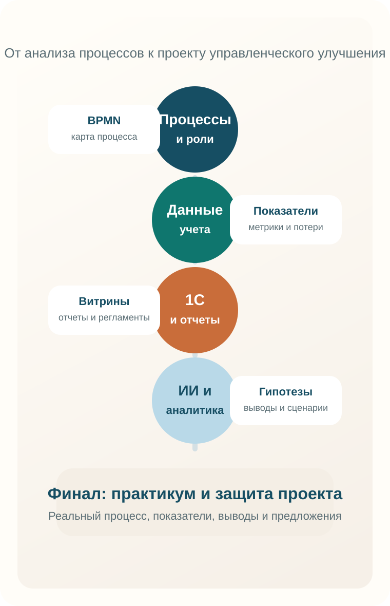

Цель
Формирование у обучающихся компетенций в области анализа процессов, интерпретации учетных данных, работы в 1С и применения инструментов ИИ для повышения качества аналитической деятельности.
Паспорт программы
Формирование у обучающихся компетенций в области анализа процессов, интерпретации учетных данных, работы в 1С и применения инструментов ИИ для повышения качества аналитической деятельности.
Процессный подход, управленческий учет, 1С, цифровые инструменты, искусственный интеллект и проектное совершенствование выбранного процесса.
Цифровая аналитика и улучшение бизнес-процессов в управленческом учете — это междисциплинарный курс, ориентированный на формирование у обучающихся практических навыков анализа процессов, интерпретации данных управленческого учета, работы в среде 1С и применения инструментов искусственного интеллекта.
Подготовка специалиста, который способен читать цифры, понимать логику процесса и предлагать управленческие улучшения.
Отчет, регламент, дашборд или проект совершенствования выбранного процесса.
Управленческий учет, аналитика процессов, цифровые инструменты, 1С и ИИ.
Выпускники курса помогут компании выявлять узкие места в процессах, интерпретировать управленческие данные и предлагать обоснованные меры по повышению эффективности.
Позиционирование
Курс объединяет процессный подход, инструменты управленческого учета, прикладную работу в 1С и современные цифровые средства анализа, включая искусственный интеллект. Благодаря этому программа может быть представлена как академически выверенная и одновременно прикладная.
Основной образовательный результат состоит в подготовке слушателя, способного выявлять проблемы процесса, интерпретировать показатели и формулировать предложения по улучшению на основе данных.
Архитектура программы

Курс может быть адаптирован под высшее образование, дополнительное профессиональное образование и корпоративный контур обучения.
Для формирования прикладного представления о связи процессов, данных учета, аналитики и управленческих решений.
Для повышения квалификации в области цифровой аналитики, 1С и применения ИИ в рабочей практике.
Для сотрудников, вовлеченных в учет, описание процессов, автоматизацию и подготовку управленческой отчетности.
Формирование у обучающихся комплекса практических компетенций в области анализа бизнес-процессов, интерпретации данных управленческого учета, использования системы 1С для решения прикладных задач и применения инструментов искусственного интеллекта в аналитической деятельности.
По завершении курса обучающийся способен выполнять описание и анализ процессов, интерпретировать учетные показатели, выявлять проблемные зоны, формулировать предложения по совершенствованию и представлять результат в формате аналитического или проектного документа.
Ниже представлены ключевые практические умения, которые слушатель сможет применять в учебных и прикладных задачах после освоения программы курса.
Содержание выстроено от базового понимания процессов и данных к итоговому проекту совершенствования. Практические занятия реализуются в формате лабораторных работ с поэтапной фиксацией результатов.
Формирование базового языка описания процессов и понимания логики их анализа.
Освоение логики работы с показателями, необходимыми для оценки эффективности процессов.
Практика работы с учетной системой как источником данных и объектом постановки прикладных задач.
Осмысленное применение цифровых сервисов для анализа, структурирования информации и подготовки выводов.
Итоговый модуль, в котором обучающийся проектирует улучшение конкретного процесса и защищает результаты.
Практическая подготовка реализуется в форме лабораторных работ. Каждая лабораторная работа привязана к конкретному модулю и предполагает оформляемый результат: схему, таблицу показателей, аналитическую записку, постановку задачи или проектное предложение.
Описание бизнес-процесса в BPMN и выделение контрольных точек, ролей, входов, выходов и проблемных зон.
Расчет показателей, анализ план-фактных отклонений и интерпретация данных управленческого учета.
Получение данных из системы, анализ отчетов и постановка прикладной задачи на автоматизацию или доработку.
Использование ИИ и цифровых инструментов для обработки материалов, поиска отклонений и подготовки выводов.
Формирование итогового проектного решения по совершенствованию выбранного процесса и защита результатов.
Практический формат
Практическая часть строится вокруг реальных документов, отчетов, витрин, схем и прикладных мини-проектов. За счет этого программа воспринимается как прикладной маршрут, а не как набор разрозненных тем.
Ниже приведен пример тематического распределения содержания по неделям. При необходимости план может быть адаптирован под иную продолжительность курса, модульный формат или интенсив.
Критерии оценивания лабораторных работ
Максимум за одну лабораторную работу: 20 баллов.
Рекомендуемая шкала: 18-20 баллов — отлично, 14-17 — хорошо, 10-13 — удовлетворительно, менее 10 — требуется доработка.
Итоговая оценка по дисциплине: определяется на основании результатов лабораторных работ и защиты итогового проекта.
Ниже приведен рекомендуемый вариант распределения учебной нагрузки для программы объемом 108 часов. При необходимости пропорции могут быть адаптированы под 72-часовой формат или под требования конкретной образовательной организации.
108 часов
Ниже приведены заготовки, которые можно использовать как основу для методических указаний, ведомости заданий или электронного курса.
Цель: научиться описывать процесс в нотации BPMN и выявлять точки контроля.
Исходные данные: текстовое описание процесса, перечень участников, входов и выходов.
Задание: построить схему процесса, обозначить события, роли, ветвления и проблемные зоны.
Результат: BPMN-схема и краткий аналитический комментарий.
Цель: освоить расчет и интерпретацию ключевых показателей.
Исходные данные: таблица с плановыми и фактическими значениями показателей.
Задание: рассчитать отклонения, определить проблемные зоны и сделать выводы.
Результат: расчетная таблица и аналитическая записка.
Цель: научиться находить и интерпретировать данные в прикладной системе.
Исходные данные: учебная база, перечень документов, справочников и отчетов.
Задание: найти требуемые данные, описать логику их формирования и подготовить постановку задачи на доработку.
Результат: отчет по результатам анализа и проект постановки задачи.
Цель: научиться использовать ИИ и цифровые сервисы как вспомогательный аналитический инструмент.
Исходные данные: текстовые регламенты, табличные данные, промежуточные выводы.
Задание: структурировать материалы, подготовить черновик выводов, проверить корректность результата и зафиксировать ограничения использования ИИ.
Результат: комплект аналитических материалов с пояснением роли ИИ в их подготовке.
Цель: интегрировать результаты предыдущих работ в единое проектное решение.
Исходные данные: модель процесса, показатели, материалы анализа, предложения по улучшению.
Задание: подготовить итоговый проект, обосновать предлагаемые изменения и представить его к защите.
Результат: проектное предложение и презентация защиты.
72-108 часов
2 части
Ключевая книга по BPMN для практического моделирования. Подходит как базовый текст для лабораторных работ по построению корректных и читаемых схем процессов.
Открыть источникРекомендуется как базовая настольная книга для понимания процессного подхода, выделения процессов верхнего уровня и проектирования организационной структуры.
Открыть источникПолезен как расширяющий источник для преподавателя и сильных слушателей: даёт целостную картину методов, ролей и практик в области BPM.
Открыть источникПодходит для блока про управленческий учет как источник данных и помогает связать теоретические показатели с практикой автоматизации в 1С:ERP.
Открыть источникРекомендуется для тем, связанных с бюджетированием, финансовым планированием и интерпретацией план-фактных отклонений.
Открыть источникПомогает развивать аналитическое мышление, критичность к данным и умение корректно интерпретировать количественную информацию.
Открыть источникОфициальное пособие фирмы «1С», полезное для понимания логики объектов системы, структуры прикладного решения и источников аналитических данных.
Открыть источникРекомендуется для углубления части курса, связанной с выборкой данных, формированием отчетов и аналитическим извлечением информации из 1С.
Открыть источникРекомендуется для подготовки аналитических отчетов, учебных презентаций и защиты лабораторных и проектных результатов.
Открыть источникХорошо подходит для блока по ИИ как инструменту аналитика и менеджера: помогает обсуждать практическую полезность технологий без излишнего техницизма.
Открыть источник